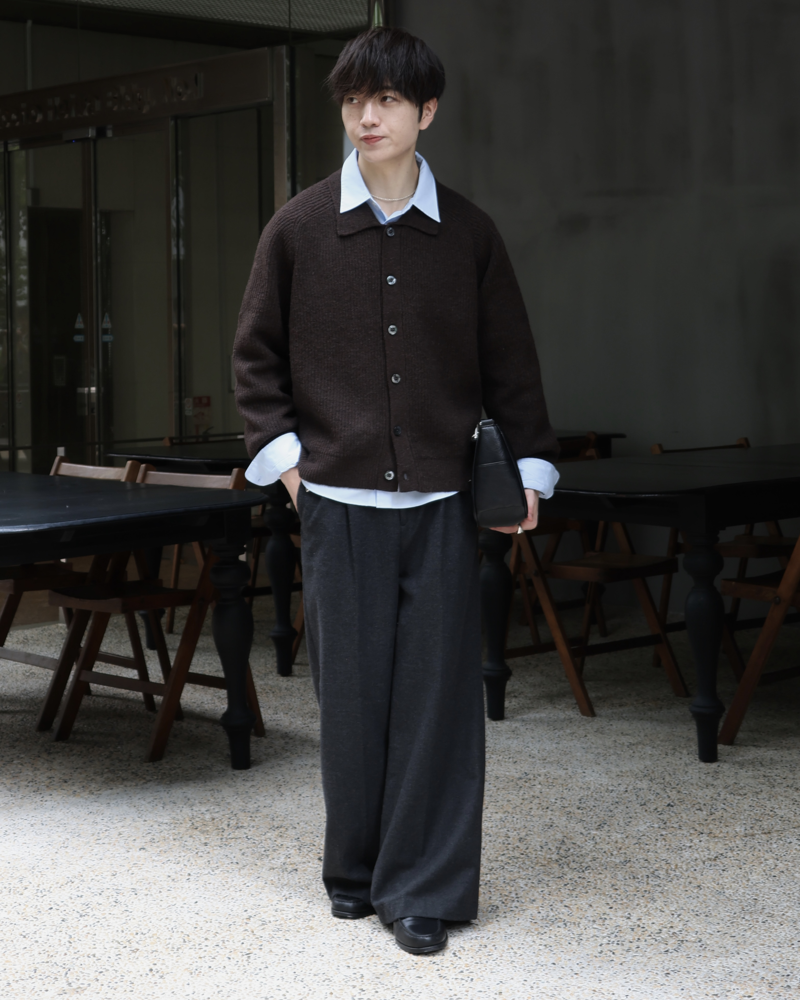
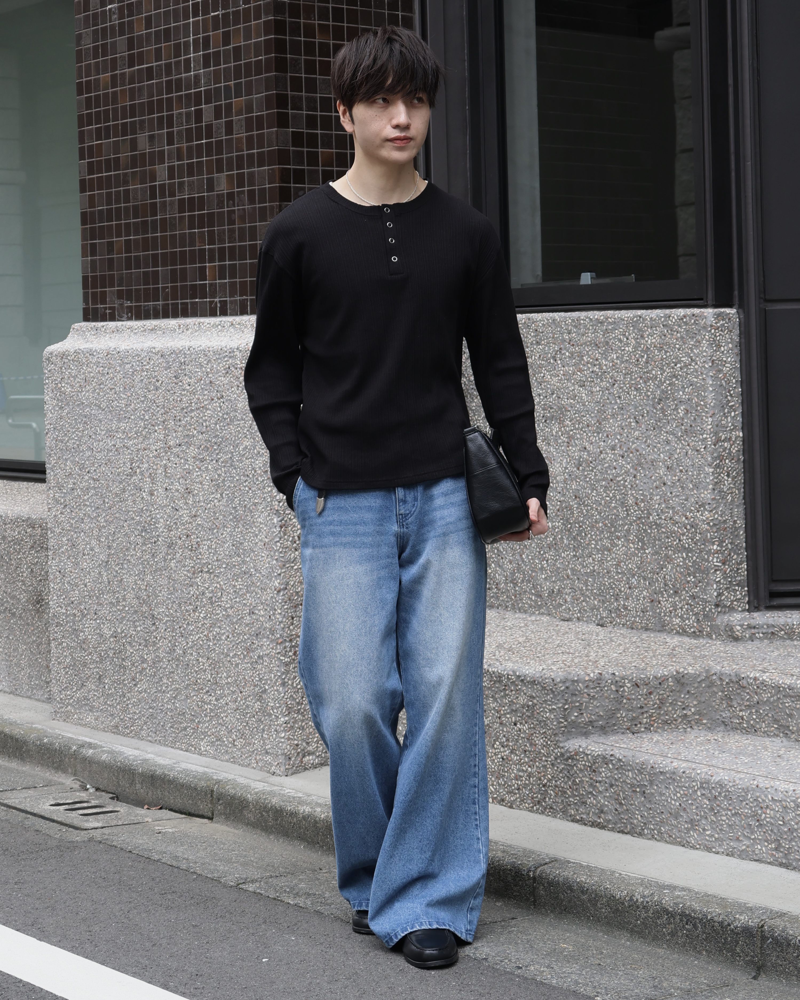
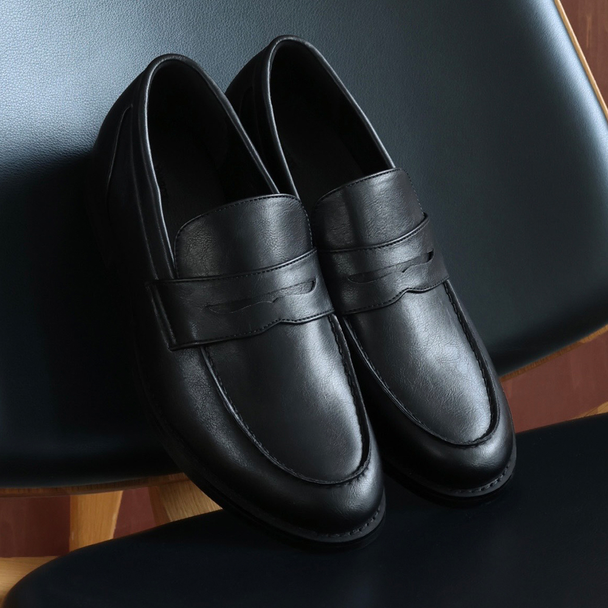
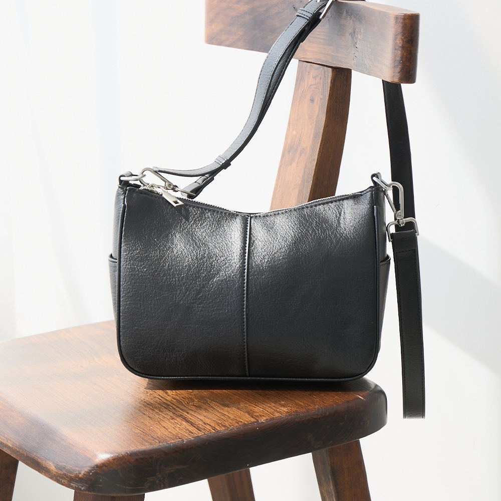
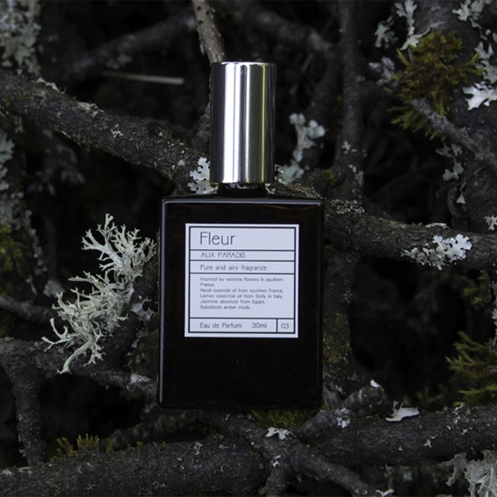

10月になりいよいよ本格的な秋シーズンに突入です！
10月は気温的にも過ごしやすくお出かけもしやすいので、
個人的に大好きな季節です✨
皆さんのお出かけも1回1回大切な日になる様、
僕が日頃意識していることをご紹介させて頂きます★
失敗しない秋デート服のつくり方
好印象の鍵は、足し算よりも「引き算」。
秋は気候が過ごしやすく、お出かけやデートが増える季節。
今回は、デートで好印象を与える
コーデのつくり方を簡単に解説します。
1 無地×モノトーンをベースにする
どんな服装の相手とデートしたいですか？
- ・きれい
- ・清潔感がある
- ・大人っぽい
こういった印象は、女性から見ても同じ。
派手で奇抜な服装より、相手に好印象を与えられる服装を選ぶことが大切です。
無地のアイテムを使い、モノトーンをベースに組むだけで、落ち着いた洗練コーデに仕上がります。


2 レザーアイテムで引き締める
シンプルなコーデにレザーを加えると、全体が大人っぽく引き締まります。

1 革靴を履く
革靴を取り入れると、コーデ全体にまとまりが生まれます。
引き締まった着こなしと合わせることで、より洗練された印象に。

2 ミニバッグを持つ
ポケットが荷物でパンパンだと、せっかくのシルエットも台無し。
スマホやペットボトル、傘まで入る2WAYバッグなら、シーンに合わせて使えます。
3 香水をつける
服装が整っていても、香りの印象が悪いと台無し。
つけすぎには注意しつつ、清潔感のある香りを選びましょう。
持ち運びやすい小さめの香水なら、外出先でも使えて便利です。

簡単に取り入れられるものばかりなので
良ければ是非秋のお出かけにプラスしてみてください～！